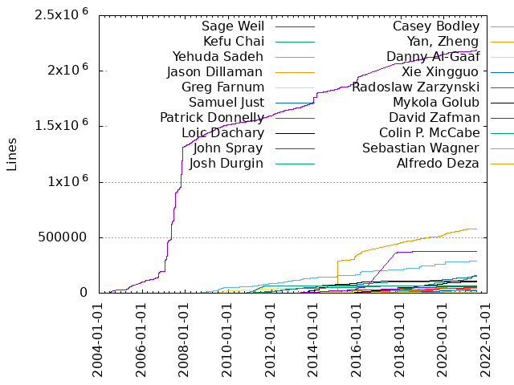
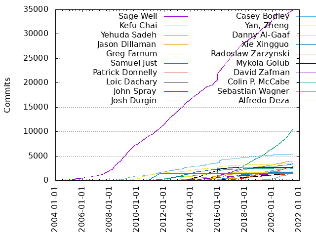

Authors
| Author | Commits (%) | + lines | - lines | First commit | Last commit | Age | Active days | # by commits |
|---|
| Sage Weil | 34842 (27.94%) | 2187365 | 2021492 | 2004-06-24 | 2021-07-03 | 6217 days, 18:50:57 | 4115 | 1 |
| Kefu Chai | 10447 (8.38%) | 160200 | 139805 | 2014-11-17 | 2021-07-06 | 2422 days, 17:03:22 | 1861 | 2 |
| Yehuda Sadeh | 5368 (4.30%) | 285776 | 126417 | 2008-01-10 | 2021-05-19 | 4878 days, 10:54:42 | 1828 | 3 |
| Jason Dillaman | 3905 (3.13%) | 576863 | 278243 | 2014-09-02 | 2021-03-23 | 2393 days, 17:10:57 | 1206 | 4 |
| Greg Farnum | 3457 (2.77%) | 75804 | 38062 | 2009-06-05 | 2021-06-17 | 4394 days, 20:02:14 | 1174 | 5 |
| Samuel Just | 3391 (2.72%) | 151306 | 73855 | 2010-10-21 | 2021-07-01 | 3906 days, 3:40:03 | 1216 | 6 |
| Patrick Donnelly | 2807 (2.25%) | 41180 | 35390 | 2016-01-27 | 2021-07-02 | 1982 days, 18:59:51 | 817 | 7 |
| Loic Dachary | 2719 (2.18%) | 107599 | 48828 | 2013-01-16 | 2021-03-19 | 2983 days, 21:41:03 | 781 | 8 |
| John Spray | 2663 (2.14%) | 376992 | 313983 | 2013-12-11 | 2018-11-26 | 1811 days, 6:29:43 | 816 | 9 |
| Josh Durgin | 2578 (2.07%) | 64771 | 30487 | 2010-10-21 | 2021-06-30 | 3904 days, 22:09:11 | 991 | 10 |
| Casey Bodley | 2390 (1.92%) | 46500 | 31749 | 2014-02-07 | 2021-06-24 | 2693 days, 21:00:49 | 903 | 11 |
| Yan, Zheng | 1926 (1.54%) | 59930 | 33416 | 2012-06-10 | 2021-02-01 | 3157 days, 2:21:04 | 978 | 12 |
| Danny Al-Gaaf | 1648 (1.32%) | 10188 | 202915 | 2012-08-16 | 2019-03-21 | 2408 days, 13:41:24 | 231 | 13 |
| Xie Xingguo | 1626 (1.30%) | 18460 | 10545 | 2015-09-09 | 2021-01-14 | 1954 days, 16:57:15 | 657 | 14 |
| Radoslaw Zarzynski | 1426 (1.14%) | 50061 | 30732 | 2015-01-19 | 2021-07-01 | 2355 days, 1:27:18 | 635 | 15 |
| Mykola Golub | 1425 (1.14%) | 100434 | 25826 | 2014-12-23 | 2021-06-24 | 2374 days, 23:43:48 | 825 | 16 |
| David Zafman | 1405 (1.13%) | 58767 | 16837 | 2012-10-05 | 2021-03-13 | 3080 days, 2:30:40 | 818 | 17 |
| Colin P. McCabe | 1392 (1.12%) | 63820 | 41575 | 2010-09-15 | 2011-09-16 | 365 days, 23:35:44 | 232 | 18 |
| Sebastian Wagner | 1348 (1.08%) | 31761 | 21330 | 2018-01-24 | 2021-07-02 | 1255 days, 3:26:23 | 421 | 19 |
| Alfredo Deza | 1342 (1.08%) | 26911 | 23425 | 2013-07-19 | 2020-01-10 | 2366 days, 4:44:19 | 427 | 20 |
These didn't make it to the top: Yuri Weinstein, John Wilkins, Nathan Cutler, Haomai Wang, Lenz Grimmer, Matt Benjamin, Zack Cerza, Dan Mick, Abhishek Lekshmanan, João Eduardo Luís, Adam C. Emerson, Igor Fedotov, Ma Jianpeng, Ilya Dryomov, Orit Wasserman, Yingxin Cheng, Ricardo Dias, Tommi Virtanen, Neha Ojha, Venky Shankar, Tiago Melo, Jos Collin, Michael Fritch, Jan Fajerski, Willem Jan Withagen, Varsha Rao, Volker Theile, Noah Watkins, Rishabh Dave, Jeff Layton, J. Eric Ivancich, Andrew Schoen, Myoungwon Oh, Brad Hubbard, Ricardo Marques, Ali Maredia, Tamil Muthamizhan, Zac Dover, Sam Lang, Boris Ranto, Michal Jarzabek, Xiubo Li, Patrick Seidensal, Yuval Lifshitz, Yann Dupont, Ernesto Puerta, Stephan Müller, Ken Dreyer, Adam Kupczyk, Gary Lowell, Chang Liu, Wido den Hollander, Liu Changcheng, Paul Cuzner, Adam Crume, Zhiqiang Wang, Warren Usui, Robin H. Johnson, Daniel Gryniewicz, Piotr Dałek, Pritha Srivastava, Vasu Kulkarni, Alfonso Martínez, Ren Huanwen, Sandon Van Ness, Kiefer Chang, Song Weibin, Patience Warnick, Li Wang, Joshua Schmid, Dongsheng Yang, Tatjana Dehler, Xuehan Xu, Lucian Petrut, Zhang Shaowen, Yan Jun, Swami Reddy, Andrew Leung, Yunchuan Wen, Ramana Raja, Xiaoxi Chen, Amit Kumar, Pan Liu, Mark Nelson, Kyr Shatskyy, Joe Buck, Luo Runbing, Zhi Zhang, Yuan Zhou, Tim Serong, Marcus Watts, Xinze Chi, Shu, Xinxin, Laura Paduano, Douglas Fuller, Erwan Velu, Caleb Miles, Guang Yang, Dan van der Ster, Jiaying Ren, Huang Jun, Adam King, Ronen Friedman, Kotresh HR, Javier M. Mellid, Song Baisen, Jesse Williamson, Zongyou Yao, Mohamad Gebai, Xiaowei Chen, Shinobu Kinjo, Jenkins, John Coyle, Yuli Yang, Xiaoyan Li, David Disseldorp, Babu Shanmugam, Nilamdyuti Goswami, James Mcclune, Sébastien Han, Dehao Shang, Amnon Hanuhov, Somnath Roy, Dongdong Tao, Vikhyat Umrao, Abutalib Aghayev, Victor Denisov, Sridhar Seshasayee, Nizamudeen A, Enming Zhang, Yanhu Cao, Owen Synge, Or Ozeri, Wei Qiaomiao, Avan Thakkar, Mike Ryan, Gui Hecheng, Yuan Lu, Tianshan Qu, David Galloway, Shilpa Jagannath, Ning Yao, Deepika Upadhyay, Abhishek L, Sebastien Ponce, Milind Changire, Juan Miguel Olmo Martínez, Bassam Tabbara, Amir Vadai, Ulrich Weigand, Or Friedmann, Bingyin Zhang, Anirudha Bose, Alex Elder, Zengran Zhang, Guillaume Abrioux, Christophe Courtaut, lu.shasha, Ramesh Chander, Mike Christie, Carlos Maltzahn, Anthony D Atri, Aashish Sharma, wangzhengyong, Kiseleva Alyona, Ziye Yang, Vu Pham, Shanchun Lv, Gu Zhongyan, Fang Yuxiang, Matthew Oliver, Vicente Cheng, Simon Gao, Oleh Prypin, Michael Rodriguez, Mark Kogan, Sebastian Krah, Ken Iizawa, chunmei-liu, Yin Zheng, Laszlo Boszormenyi, Jashan Kamboj, James Page, Avner BenHanoch, Wei Jin, Mingxin Liu, Kamoltat (Junior) Sirivadhna, Florian Haas, Mahati Chamarthy, Drunkard Zhang, Alexandre Oliva, Varada Kari, Leo Zhang, Changcheng Liu, Luo Kexue, Dunrong Huang, Alexandre Marangone, Yang Honggang, Travis Rhoden, Thomas Bechtold, Roald J. van Loon, Pavan Rallabhandi, Karol Mroz, Harish Munjulur, Daniel Pivonka, Adir Lev, Yang Wang, Yaarit Hatuka, Shun Song, Hector Martin, Daniel-Pivonka, Aron Gunn, haoyixing, Zhang Zezhu, Roi Dayan, Rick Chen, Li Peng, Ishan Rai, Dong Yuan, Dmitry Smirnov, Alan Somers, Zhang Jiao, Sahid Orentino Ferdjaoui, Pete Zaitcev, Li Shu Hao, Henry C Chang, Haodong Tang, Barbora Ančincová, luo rixin, Xianxia Xiao, Ross Turk, Rohan Mars, Mehdi Abaakouk, Kristoffer Grönlund, Jianjian huo, Ilsoo Byun, root, Xinying Song, Shyamsundar R, Peng Cheng Zhang, Nishtha Rai, Kevin Dalley, Kanika Murarka, Jim Schutt, Esteban Molina-Estolano, Andras Elso, Xing Lin, Stanislav Sedov, Shiyang Ruan, Robert LeBlanc, MingXin Liu, Jing Wenjun, 胡玮文, chunmei Liu, Sidharth Anupkrishnan, Peter Reiher, Dimitri Savineau, Dennis Schafroth, Bryan Stillwell, lvshuhua, Zhu Shangzhong, Zhang Lei, Yunfei Guan, You Ji, Yin Congmin, Ruifeng Yang, Roman Penyaev, Li Bingyang, Dmitry Yatsushkevich, Chunsong Feng, XueYu Bai, Sarit Zubakov, Sangdi Xu, Rafael Quintero, Pavani Rajula, Min Chen, Lin Bing, Jianjian Huo, shenhang, Zhao Junwang, Weibing Zhang, Thomas Mueller, Shiqi, Paul Emmerich, Patrick McGarry, Nick Erdmann, Nathan Weinberg, Kai Wagner, Jin Cai, Ji Chen, Gaurav Kumar Garg, Chu Hua-Rong, Christian Brunner, Brian Chrisman, Andreas Peters, wangyunqing, pcuzner, Xin Yuan, Tone Zhang, Sondra.Menthers, Rodrigo Severo, Navin Barnwal, Na Xie, Myna Vajha, Kaleb S. Keithley, Jie Wang, Jianyu Li, Iain Buclaw, Dan Guo, Adam Wolfe Gordon, Abhishek Varshney, (no author), Zeng JH, Weijun Duan, Sylvain Munaut, Milan Broz, Luis Pabón, Liao Pingfang, Igor Podoski, Gregory Meno, Enno Gotthold, Chunmei Liu, Chengwei Yang, Bo Cai, cao.leilc, Zac Medico, Yan Lei, Wu Mingqiao, Thorsten Behrens, Theofilos Mouratidis, Seena Fallah, Scott A. Brandt, Ray Lv, Prashant D, Mark Kampe, Mao Zhongyi, Manali Kulkarni, Konstantin Shalygin, Kamoltat, Julien Collet, Jonas Jelten, John Gibson, Joaquim Rocha, Jing Chen, Janne Grunau, Fufei Shang, Feng Wang, Evgeniy Firsov, David Moreau Simard, Daniel Oliveira, Alexey Sheplyakov, Đặng Minh Dũng, zhengyin, topher, Yankun Li, Xavier Roche, Uday Mullangi, Tao Chang, Shengjing Zhu, Sebastien Chen, Qiaowei Ren, Qiankun Zheng, Prasad Krishnan, Paul Chiang, Mike Latimer, Luo Muyao, Luis Henriques, Liu Lei, Laurent Barbe, Kalpesh Pandya, Jonas Pfefferle, Jinyong Ha, Jan Harkes, Hitoshi Kamei, Hang Li, Ganesh Mahalingam, Duncan Bellamy, Dmytro Iurchenko, David Coles, Chendi Xue, Bartłomiej Święcki, Andrey Kuznetsov, Aleksei Gutikov, Adam Twardowski, zhangjiao, jhonxue, Zheng Yin, Zhang Wen, Zhang Weibing, Yixing Yan, Yao Guotao, Xiaofei Cui, Wanlong Gao, Tang Wenjun, Sunny Kumar, Simran Singhal, Sibei Gao, Satoru Takeuchi, Sander Pool, Ryne Li, Pere Diaz Bou, Peng Lai, Misono Tomohiro, Mark Houghton, Marcel Lauhoff, Li Jing, Lan Liu, Kongming Wu, Jun Su, Jevon Qiao, Jeegn Chen, Hong Zhangoole, Henry Chang, Fred Ar, François Lafont, Erqi Chen, Eleanor Cawthon, Dongmao Zhang, Chuanhong Wang, Casey Marshall, Ashish Singh, Andre Noll, Alexandre Bruyelles, Alex Marangone, Aditya Srivastava, Коренберг Марк, yuliyang_yewu, jianglong01, chunmei, Yongqiang He, Wang Song Bo, Volker Assmann, VRan Liu, Tina Kallio, Thomas Serlin, Tao Ning, Tang Junhui, Takeshi Miyamae, Taeksang Kim, Soumya Koduri, Shyukri Shyukriev, Sergio de Carvalho, Ruben Kerkhof, Rubab-Syed, Redick Wang, Raju Kurunkad, Prasanna Kumar Kalever, Pete V, Neil Levine, Nancy Su, Mike Perez, Michael Wodniok, Michael Sevilla, Lu Shi, Liu Shi, Kyle Marsh, Krzysztof Kosiński, Kevin Cox, Karanraj Chauhan, Kacper Kowalik, Jiffin Tony Thottan, Jacek J. Łakis, Ira Cooper, Hans Bogert, Georgios Kyratsas, Frank Yu, Filippos Giannakos, Federico Gimenez, Erwin, Brock A, Erik Logtenberg, Eric Jackson, Dave Chen, Daniel Gollub, Daniel Bar-On, Cheng Cheng, Ce Gu, Benoît Knecht, Ashita Kasam, Andrew Bartlett, Allen Samuels, Aleksei Zakharov, weixinwei, riccardo80, ZhenLiu94, Zhao Kun, Zhao Chao, YuanXin, Yu Shengzuo, Xiao Guodong, Xiangwei Wu, Xiangdong Mu, Vladimir Bashkirtsev, Vishal Kanaujia, Victor Araujo, Tyler Brekke, Thomas Kriechbaumer, Thomas Johnson, Tang Jin, Stephen Jahl, Snow Si, Sharif Olorin, Servesha Dudhgaonkar, Scoots Hamilton, Rajesh Nambiar, Ponnuvel Palaniyappan, Peng Xie, Mohammad Salehe, Marc Koderer, Liyan Wang, Liul, Li Tianqing, Laura Flores, Kinga Karczewska, Kai Zhang, Junyoung, Sung, Johnu George, Jens Rosenboom, James Liu, Huamin Chen, Holger Macht, He Chuang, Guo Zhandong, Frank Filz, Feng Hualong, Dongsu Park, Dmitriy Rabotjagov, David Anderson, Cilang Zhao, Chen Zhenghua, Aran85, Anurag Bandhu, Antoaneta Damyanova, Andrey Parfenov, Andrew Solomon, Alin Gabriel Serdean, Alexandre Derumier, Alex Mikheev, yanjun, wangsongbo, wanghongxu, slivik, gal salomon, dependabot[bot], chencan, Zou Aiguo, Zhou Zhengping, Zhou Rui Song, Zeqiang Zhuang, Yibo Cai, Yehu, Yazen Ghannam, Yatin Kumbhare, Yaniv Kaul, Yaakov Selkowitz, Xingyi Wu, Xie Rui, Xiaoman Huang, Xiang Xiang, Wu Xingyi, Wu Jian, Wenjun Huang, Wei Luo, Wei Feng, Tushar Gohad, Tsung-Ju Lii, Tom Schoonjans, Tom Callaway, Tim, Tao Dong Dong, Takanori Nakao, Taewoong Kim, Stratos Psomadakis, Stephen F Taylor, Stefan Kooman, Spandan Kumar Sahu, Song Shuangyang, Sirisha Guduru, Siddharth Sharma, Shylesh Kumar, Shraddha Agrawal, Shotaro Kawaguchi, Shon Paz, Shengming Zhang, Roland Mechler, Riccardo Ferretti, Rafał Wądołowski, Rachana Patel, Oren Duer, Neal Gompa, My Do, Ming Hao Cong, MinSheng Lin, Mike Shuey, Michel Normand, Michael Riederer, Matthew Vernon, Matthew Roy, Marius Schiffer, Marc Schoechlin, Liu Yang, Liu Peng, Li Hongjie, Lars Marowsky-Bree, Kalpesh, JuanJose JJ Galvez, Joseph Sawaya, Jojy George Varghese, Joe Julian, JiangYu, Jian Wen, Javeme, James P. Weaver, Ivo Jimenez, Hongtong Liu, Hardik Vyas, Guilhem Lettron, Goutham Pacha Ravi, Gangbiao Liu, Francois Deppierraz, Fabian Grünbichler, Fabian Bonk, Etienne Menguy, Eric Ivancich, Donghai Xu, Daniel J. Hofmann, Daniel Glaser, Chris Holcombe, Chris Dunlop, Chang-Yi Lee, CC Lien, Byungsu Park, Burkhard Linke, Benjeman Meekhof, Arthur Outhenin-Chalandre, Anton Oks, Anjaneya Chagam, Andrey Stepachev, Andreas Gerstmayr, Andrea Baglioni, Albin Antony, Adam Spiers, 靳登科, ypdai, yangjun, weiyingze-git, wanwencong, wangyingbin, sepia-liu, rakeshgm, nSedrickm, mhackett, marnberg, hzwuhongsong, ghyer, galsalomon66, dengchl01, clyso, caolei, apovzner, Zulai Wang, Zhenyu Leng, Zhanhao (Jasper) Liu, Zhang Bing Yi, Yongyue Sun, Yongseok Oh, Ying He, Yichao Li, Yehua Chen, Yang DeLiu, Xuan Liu, Xiong Yiliang, Xinxin Shu, Xin Liao, Xiaoguang Wang, Wong Hoi Sing Edison, William A. Kennington III, Wen Peng Li, Waad Alkhoury, Vladislav Odintsov, Vedant Nanda, Varada Raja Kumar Kari, Vangelis Koukis, Vaibhav Bhembre, Tomy Cheru, Thomas Laumondais, Takuya ASADA, Tahia Khan, Taeuk Kim, Sylvain Baubeau, Sven Anderson, Supriti Singh, Steve Capper, Stephon Striplin, Stefan Priebe, Stefan Eilemann, Simon Leinen, Shang Ding, Sean Fang, Saumay Agrawal, Sarthak Munshi, Sandro Bonazzola, Sameer Tiwari, Sahithi R V, SHU Zhenyi, Roushan Ali, Rongze Zhu, Ronak Jain, Ron Allred, Robert Sander, Robert Jansen, Rishabh Kumar, Richael Zhuang, Ranjitha G, Qinghua Jin, Pooja Gautam, Peter Woodman, Peter Maloney, Peng Zhang, Patrick Nawracay, Orlando Moreno, Nikita Gerasimov, Nick Janus, Nick Fisk, Neha Gupta, Mike Kelly, Melissa Li, Maxime Robert, Maxime Guyot, Mauricio Faria de Oliveira, Matthew Wodrich, Matt Richards, Markus Elfring, Marcos Paulo de Souza, Liuzhong Chen, Liu Lan, Liu Hong, Liao Weizhong, Lei Dong, Lee Revell, Kyle Bader, Kuan Kai Chiu, Kim Vandry, Katie Holly, Karl Eichwalder, Josh Pieper, Joseph McDonald, Jordi Llonch, Jon Bernard, Joe Handzik, Jiawei Li, Jianshen Liu, Jerry Lee, Jeffrey Chu, Javier Guerra, Jasper Spaans, Janne Johansson, Irek Fasikhov, Ilya Shipitsin, Ilja Slepnev, Ignacio Bravo, Huan Zhang, Hervé Rousseau, Henrik Korkuc, Harald Klein, Gong Chuang, Gerald Yang, Gaurav Sitlani, Gary Hyg, Franck Bui, Florent Manens, Florent Bautista, Feng Yu, Feng He, Federico Simoncelli, Fan Yang, Fabrizio D'Angelo, Edwin F. Boza, Dominique Leuenberger, Dingdang Zhang, Ding Dinghua, Derek Yarnell, David Casier, Danny Abukalam, Daniel Vos, Dan Horák, Dai Zhi Wei, Courtney Caldwell, Cory Snyder, CodingSpiderFox, Christopher O'Connell, Christian Marie, Chris Glass, Chengyuan Li, Chen Yu Peng, Charles Alva, Brian Andrus, Bosse Klykken, Blaine Gardner, Billy Olsen, Bi Shun Ke, Bastian Blank, Baptiste Veuillez, BJ Lougee, Armando Segnini, Ariela, Andy Allan, Andreas Unterkircher, Andreas Bluemle, Alexey Stupnikov, Alex Wang, Albert Tu, Alan Grosskurth, Aishwarya Mathuria, Accela Zhao, Abhishek Dixit, Aaryan Porwal, zhuo li, zhoufeng, ylifshit@redhat.com, ybwang0211, yanqiang-ux, xuxuehan xuxuehan, xenago, wei xiao, sunilkumarn417, singuliere, sdnets, rca, peng jiaqi, nanquanyuahao, mooncake, ming416, mflehmig, ludehp, liupan1111, lijiaxu, kyr, kshtsk, jshen28, jrshiqi, jinmyeonglee, ianwatsonrh, hoamer, haodong.tang, gk, fullerdj, fanjunwei, fangdong, fabrizio8, es-gyt, dorindabassey, diwilli, cypherean, craigchi, clove, chenqiuzhang, chenerqi, carsonoid, bangmingcheng, anurag rakesh bandhu, ahanukov, ahaase-c4u, Zhuang Xiaochun, Zhu Jie Wen, Zhou Peng, Zhicheng Wei, Zhi (David) Zhang, Zhe Zhang, Zhao Yang Han, Zhang Huan, Zhang Dao Long, Yuelong Guang, YongSheng Zhang, Yong Wang, Yong Guo, Yixun Lan, YiQiang Chen, Yao guotao, Yannick Atchy Dalama, Yanfei Xu, Yanchun Bai, Xu Xue Han, Xu Biao, Xihui He, Xiaojun Liao, Xiang Dai, Xan Peng, Wyllys Ingersoll, Wu Hsuan-Heng, Wilson E. Alvarez, Wesley Spikes, Wenfeng Wang, Wencong Wan, Wei Qian, WangPengfei, Wang, Yaguang, Wang Yong, Wang Shu Guang, Wang Hongxu, Wang Guoqin, Wang Bo Zhao, Walter Huf, Vitja Makarov, Vitaliy Filippov, Viktor Suprun, VasishtaShastry, Vasily Philipov, Vartika Rai, Vanush Misha Paturyan, Vangelis Tasoulas, Valentin Lorentz, Valentin Bajrami, Valentin B, Valentin Arshanes Thomas, Tyler Zeqing Qi, Tyler, Tuan Hoang, Torben Hørup, Tomáš Kukrál, TommyLike, Tomasz Setkowski, Tomasz Paskowski, Tom Barron, Tobias Suckow, Tobias Gall, Tobias Florek, Timofey Titovets, Tim Lin, Tim Freund, Tim Bishop, Tiago Pasqualini, Thorsten Glaser, Thore Kruess, Thomas Schneider, Thomas Goirand, Thomas Cantin, Teeranai Kormongkolkul, Ted-Chang, Tatsuya Naganawa, Tarang Sharma, Tao Chen, Svyatoslav, Sven Wegener, Sven Seeberg, Sushma Gurram, Sunil Kumar Nagaraju, Subramanyam Varanasi, Su Yue, Stuart Longland, Stig Telfer, Steven Dieffenbach, Steve Stock, Steve MacGregor, Stephan Renatus, Stefan Knorr, Stefan Bischoff, Star Guo, Stanislav Datskevych, Song Xinying, Siyu Sun, Simone Gotti, Simon Ruggier, Shishir Gowda, Sheng Mao, Shen-Ta Hsieh, Shehbaz Jaffer, Shawn Edwards, Sharuzzaman Ahmat Raslan, Shanggao Qiu, Sergey Arkhipov, Seongyeop Jeong, Sebastiaan Nijhuis, Sean Channel, Scott Devoid, Sandor Zeestraten, Samuel Matzek, Sam Zaydel, Rémi Buisson, Rutger ter Borg, Rust Shen, Ruan Zitao, Roman Haritonov, Robin Tang, Robin Müller, Robin Lee, Robin Dehu, Roberto Oliveira, Robbie Williamson, Rishabh Chawla, Richard W.M. Jones, Richard Brown, Remy Zandwijk, Ramakrishnan Periyasamy, Rahul Aggarwal, Radu Toader, Rachanaben Patel, Quan Deng, Qi Liang Hong, Proskurin Kirill, Prateek Sachan, Piotr Kubaj, Pierre Rognant, Pierre Chaumont, Petr Machata, Petertc Chu, Peter Wienemann, Peter Vinson, Peter Keresztes Schmidt, Peter Gervai, Peng Wang, Paweł Sadowski, Paul Reece, Paul Meserve, Paul Dee, Patrick Dinnen, Pascal de Bruijn, Pascal Bach, Padraig O'Sullivan, Osa1989, Oluf Lorenzen, Nur Faizin, Niu Pengju, Nitin A Kamble, Nikola Kotur, Niklas Hambüchen, Niels de Vos, Nicolas Yong, Neil Horman, Neha Ummareddy, Nathan Johnson, Nathan Fish, Nag Pavan Chilakam, Mouad Benchchaoui, Moritz Möller, Mitsumasa KONDO, Mitch Birti, Mingyue Zhao, Ming Lin, Mike Lundy, Mike Hackett, Michel, Michał Nasiadka, Michal Skalski, Michal Koutný, Michael Prokop, Michael Nelson, Michael McThrow, Michael Eischer, Mauricio Garavaglia, Matthias Gerstner, Matthias Bach, Matthew Taylor, Matthew Cengia, Matt Boyle, Mathijs Smit, Massimiliano Cuttini, Martin Liska, Martin Ettl, Marov Aleksey, Marcus Sorensen, Marco Garcês, Marcin Juszkiewicz, Marc Gariepy, Maran Hidskes, Manuel Lausch, Manu Zurmühl, Malte Fiala, Malcolm Lee, Malcolm Holmes, Luo Rixin, Lukasz Jagiello, Lukas Stockner, Luis Periquito, Ludwig Nussel, Lucas Fantinel, Luca Castoro, Lorenz Bausch, Logan Blyth, Lluis Pamies-Juarez, Liu-Chunmei, Liu Yuhong, Liu Yang kuan, Liu Wei, Liu Peiyan, Linpeng Dong, Linfei Hou, Lin Xu Hua, Liam Monahan, Li Shuhao, Li Kefei, Lei Liu, Lee Yarwood, Laurent Voullemier, Lars Wendler, Lan De, Kévin Caradant, Kun Huang, Kuan-Kai Chiu, Kris Jurka, Konstantin Sakhinov, Kevin Zhao, Kevin Meijer, Kevin Jones, Ketor Meng, Ker Liu, Kenneth Waegeman, Karun Josy, Karel Striegel, Kapil Sharma, Kamoltat Sirivadhna, Kajetan Janiak, Kadu Ribeiro, Justinas Lingys, Junhui Tang, Jun He, Juan A. Suarez Romero, Josh, Josef Bacik, Jordan Rodgers, Jordan Hus, Jordan Dorne, Jonathan Dieter, Jonathan Davies, Jonas Keidel, John Wyatt, John McGowan, John Lin, John Law, John Fulton, Johannes M. Scheuermann, Johannes Erdfelt, Jingkai Yuan, Jim Wright, Jie Li, Jiantao He, Jianhui Yuan, Jiang Yutang, Jiang Heng, Jian Su, Jerry Pu, Jeremy Qian, Jeremy H Austin, Jens-Christian Fischer, Jelle vd Kooij, Jeffrey Zhang, Jeffrey Lu, Jeff Weber, Jeff Green, Jeff Epstein, Jean-Rémi Deveaux, Jean "henyxia" Wasilewski, Jayashree Candadai, Javen Wu, Jarett DeAngelis, Jan "Yenya" Kasprzak, Jamin W. Collins, James Ryan Cresawn, James Cheng, Jakub Wilk, Jaemyoun Lee, Jacek Suchenia, JP François, Ivan Jager, Ivan Grcic, Ismael Serrano, Insu Jang, Ilya Margolin, Ian Watson, Ian Kelling, Ian Holsman, Hyun-ha, Huber-ming, Hualong Feng, Hongang Chen, Herb Shiu, Hazem Amara, Harry Harrington, Harpreet Dhillon, Harley Gorrell, Hao Xiong, Hao Wang, Hannu Valtonen, Hannes von Haugwitz, Hannes Reinecke, Han Fengzhe, Haifeng Liu, Guo-Fu Tseng, Guangliang Zhao, Grégory Charot, Grzegorz Wieczorek, GregMeno, Grant Slater, Giovani Rinaldi, Germain Chipaux, Gerhard Muntingh, Gerben Meijer, George Ryall, Gaël Fenet-Garde, Gal Salomon, Gabriella S. Roman, Gabriel Sentucq, Gabe Lee, Florian Marsylle, Florian Florensa, Florian Coste, Florent Flament, Feng Guo, Felix Winterhalter, Fangxian Chen, Fangchen Sun, Fabio Alessandro Locati, Fabian Vogt, Fabian Niepelt, Evan Felix, Eric Mourgaya, Eric Lee, Eric Cook, Enno G, Emily Popper, Emile Snyder, Elzbieta Dziomdziora, Edward Yang, Edgaras Lukosevicius, Duncan Chiang, Duan Zhang, Donglin Peng, Dong Wu, Dominik Hannen, Dominik Csapak, Dmitry Plyakin, Diwakar Goel, Dirk Sarpe, Diksha Godbole, Desmond Shih, Derrick Schneider, Dennis Körner, Dengke Du, Deng Xiafubi, Deepika, David Wang, David Wahler, David Turner, David Caro, Darrell Enns, Daniël Vos, Daniel Bevenius, Dan Hill, Dan Chai, Dai Dang Van, Corey Bryant, Colin Walters, Colin Mattson, Clément Pellegrini, Clément Hampaï, Clement Lebrun, Cleber Rosa, Claire Massot, Christos Stavrakakis, Christopher Odom, Christopher Blum, Christoph Hellwig, Christian Theune, Chris Lee, Chi Zhang, Chenjiong Deng, Chengguang Xu, Chencan, Chen Xu Qiang, Chen Pan, Chen Hg, Chen Fan, Chen Dihao, Chen Baozi, Chanyoung Park, Cesar Mello, Carlos Valiente, Carl Xiong, Caleb Boylan, Bruce Flynn, Brown, David M JR, Brian Rak, Brian Felton, Brett Niver, Brandon Seibel, Brad Fitzpatrick, Bobby Alex Philip, Bjørnar Ness, Bin Zheng, Bhavishya Gopesh, Bernd Zeimetz, Benjamin Kerensa, Ben England, Avan, Augustinas, Ashutosh Narkar, Ashita Dashottar, Ashish Chandra, Arthur Liu, Arthur Gorjux, Aristoteles Neto, Anton Blanchard, Anton Aksola, Anthony D'Atri, Anthony Alba, Ansgar Jazdzewski, Anis Ayari, Andrey Groshev, Andrew Woodward, Andrew Shewmaker, Andrew Farmer, Andreas Krebs, Andreas Haase, Anand Bhat, Amrita Sakthivel, Amrita, Alphat-PC, Alistair Strachan, Alfredo Sola, Alexis Normand, Alexey Shabalin, Alexey Miasoedov, Alexey Lapitsky, Alexandru Cucu, Alexandra Settle, Alexander Sushko, Alexander Graf, Alexander Ermolaev, Alexander Chuzhoy, Alex Zhang, Alex Wu, Alessandro Barbieri, Albert H Chen, Albert, Ailing Zhang, Ahoussi Armand, Adam Manzanares, Aaron Chu, Aaron Bassett, 00111048
Only top 20 authors shown
Only top 20 authors shown
| Month | Author | Commits (%) | Next top 5 | Number of authors |
|---|
| 2021-07 | Kefu Chai | 28 (45.90% of 61) | Yingxin Cheng, Yuval Lifshitz, Xuehan Xu, Sebastian Wagner, Ernesto Puerta | 15 |
| 2021-06 | Kefu Chai | 300 (36.45% of 823) | Sage Weil, Patrick Donnelly, Samuel Just, Yingxin Cheng, Sebastian Wagner | 74 |
| 2021-05 | Kefu Chai | 257 (28.15% of 913) | Sage Weil, Ilya Dryomov, Samuel Just, Patrick Donnelly, Yingxin Cheng | 91 |
| 2021-04 | Kefu Chai | 305 (30.47% of 1001) | Sage Weil, Patrick Donnelly, Samuel Just, Yingxin Cheng, Ilya Dryomov | 95 |
| 2021-03 | Kefu Chai | 320 (25.50% of 1255) | Sage Weil, Patrick Donnelly, Radoslaw Zarzynski, Samuel Just, Sebastian Wagner | 109 |
| 2021-02 | Kefu Chai | 245 (23.09% of 1061) | Sage Weil, Sebastian Wagner, Michael Fritch, Zac Dover, Myoungwon Oh | 91 |
| 2021-01 | Kefu Chai | 218 (23.02% of 947) | Sebastian Wagner, Patrick Donnelly, Sage Weil, Jason Dillaman, Samuel Just | 89 |
| 2020-12 | Kefu Chai | 269 (31.65% of 850) | Patrick Donnelly, Jason Dillaman, Yingxin Cheng, Ernesto Puerta, Sebastian Wagner | 102 |
| 2020-11 | Kefu Chai | 228 (25.14% of 907) | Patrick Donnelly, Jason Dillaman, Paul Cuzner, Samuel Just, Adam C. Emerson | 111 |
| 2020-10 | Kefu Chai | 141 (19.16% of 736) | Patrick Donnelly, Jason Dillaman, Lenz Grimmer, Liu Changcheng, Mykola Golub | 94 |
| 2020-09 | Kefu Chai | 221 (24.42% of 905) | Jason Dillaman, Sebastian Wagner, Patrick Donnelly, Casey Bodley, Lenz Grimmer | 111 |
| 2020-08 | Kefu Chai | 224 (23.14% of 968) | Sebastian Wagner, Patrick Donnelly, Samuel Just, Jason Dillaman, Lenz Grimmer | 108 |
| 2020-07 | Kefu Chai | 205 (20.98% of 977) | Sebastian Wagner, Patrick Donnelly, Jason Dillaman, Samuel Just, Adam C. Emerson | 108 |
| 2020-06 | Kefu Chai | 194 (21.04% of 922) | Sebastian Wagner, Patrick Donnelly, Lenz Grimmer, Varsha Rao, Radoslaw Zarzynski | 105 |
| 2020-05 | Kefu Chai | 121 (13.91% of 870) | Sebastian Wagner, Sage Weil, Jason Dillaman, Patrick Donnelly, Samuel Just | 90 |
| 2020-04 | Kefu Chai | 172 (18.44% of 933) | Sebastian Wagner, Jason Dillaman, Xiubo Li, Michael Fritch, Casey Bodley | 105 |
| 2020-03 | Sage Weil | 474 (31.12% of 1523) | Kefu Chai, Sebastian Wagner, Michael Fritch, Casey Bodley, Jason Dillaman | 127 |
| 2020-02 | Sage Weil | 415 (32.50% of 1277) | Kefu Chai, Jason Dillaman, Sebastian Wagner, Patrick Donnelly, Kyr Shatskyy | 100 |
| 2020-01 | Sage Weil | 233 (20.82% of 1119) | Kefu Chai, Patrick Donnelly, Jason Dillaman, Casey Bodley, Radoslaw Zarzynski | 110 |
| 2019-12 | Sage Weil | 330 (29.73% of 1110) | Kefu Chai, Patrick Donnelly, Jason Dillaman, Sebastian Wagner, Mykola Golub | 87 |
| 2019-11 | Sage Weil | 298 (26.05% of 1144) | Kefu Chai, Patrick Donnelly, Yehuda Sadeh, Lenz Grimmer, Nathan Cutler | 115 |
| 2019-10 | Sage Weil | 289 (25.46% of 1135) | Kefu Chai, Patrick Donnelly, Nathan Cutler, Yehuda Sadeh, Jason Dillaman | 102 |
| 2019-09 | Kefu Chai | 201 (16.81% of 1196) | Sage Weil, Casey Bodley, Patrick Donnelly, Radoslaw Zarzynski, Nathan Cutler | 109 |
| 2019-08 | Kefu Chai | 160 (15.79% of 1013) | Sage Weil, Casey Bodley, Patrick Donnelly, Radoslaw Zarzynski, Patrick Seidensal | 108 |
| 2019-07 | Sage Weil | 269 (22.84% of 1178) | Kefu Chai, Patrick Donnelly, Ricardo Marques, Casey Bodley, Sebastian Wagner | 111 |
| 2019-06 | Kefu Chai | 199 (22.98% of 866) | Sage Weil, Yehuda Sadeh, Casey Bodley, Patrick Donnelly, Jason Dillaman | 89 |
| 2019-05 | Kefu Chai | 92 (14.51% of 634) | Sage Weil, Samuel Just, Casey Bodley, Mykola Golub, Lenz Grimmer | 94 |
| 2019-04 | Sage Weil | 187 (18.23% of 1026) | Kefu Chai, Samuel Just, Casey Bodley, Patrick Donnelly, Jason Dillaman | 89 |
| 2019-03 | Sage Weil | 268 (20.71% of 1294) | Kefu Chai, Adam C. Emerson, Xie Xingguo, Casey Bodley, Patrick Donnelly | 96 |
| 2019-02 | Sage Weil | 217 (20.47% of 1060) | Kefu Chai, Radoslaw Zarzynski, Lenz Grimmer, Patrick Donnelly, Jason Dillaman | 88 |
| 2019-01 | Sage Weil | 226 (21.48% of 1052) | Kefu Chai, Patrick Donnelly, Yehuda Sadeh, Lenz Grimmer, Jason Dillaman | 94 |
| 2018-12 | Sage Weil | 187 (26.30% of 711) | Kefu Chai, Patrick Donnelly, Jason Dillaman, Alfredo Deza, Casey Bodley | 88 |
| 2018-11 | Kefu Chai | 113 (12.97% of 871) | Sage Weil, Casey Bodley, Alfredo Deza, Lenz Grimmer, Jason Dillaman | 98 |
| 2018-10 | Sage Weil | 187 (18.76% of 997) | Kefu Chai, Casey Bodley, Jason Dillaman, Patrick Donnelly, Yehuda Sadeh | 106 |
| 2018-09 | Sage Weil | 160 (17.22% of 929) | Kefu Chai, Alfredo Deza, Casey Bodley, Patrick Donnelly, Jason Dillaman | 94 |
| 2018-08 | Kefu Chai | 178 (17.32% of 1028) | Sage Weil, Patrick Donnelly, Alfredo Deza, Adam C. Emerson, Casey Bodley | 100 |
| 2018-07 | Kefu Chai | 122 (14.17% of 861) | Sage Weil, Patrick Donnelly, Nathan Cutler, Alfredo Deza, Yehuda Sadeh | 83 |
| 2018-06 | Sage Weil | 201 (23.16% of 868) | Kefu Chai, Lenz Grimmer, Patrick Donnelly, Jason Dillaman, Alfredo Deza | 80 |
| 2018-05 | Sage Weil | 193 (17.79% of 1085) | Kefu Chai, Jason Dillaman, Alfredo Deza, Patrick Donnelly, Lenz Grimmer | 92 |
| 2018-04 | Sage Weil | 167 (13.84% of 1207) | Kefu Chai, Patrick Donnelly, Ricardo Dias, John Spray, Casey Bodley | 96 |
| 2018-03 | Kefu Chai | 114 (12.54% of 909) | Sage Weil, Ricardo Dias, Jason Dillaman, Casey Bodley, Alfredo Deza | 106 |
| 2018-02 | Sage Weil | 167 (17.20% of 971) | Kefu Chai, Alfredo Deza, Jason Dillaman, Patrick Donnelly, Mykola Golub | 88 |
| 2018-01 | Sage Weil | 230 (20.76% of 1108) | Kefu Chai, Jason Dillaman, Patrick Donnelly, Yuri Weinstein, Casey Bodley | 94 |
| 2017-12 | Sage Weil | 122 (15.78% of 773) | Kefu Chai, Adam C. Emerson, Patrick Donnelly, Jason Dillaman, Mykola Golub | 79 |
| 2017-11 | Kefu Chai | 179 (18.43% of 971) | Alfredo Deza, Sage Weil, Jason Dillaman, Patrick Donnelly, Casey Bodley | 97 |
| 2017-10 | Sage Weil | 269 (20.87% of 1289) | Kefu Chai, Alfredo Deza, Jason Dillaman, Casey Bodley, Patrick Donnelly | 104 |
| 2017-09 | Sage Weil | 300 (25.84% of 1161) | Kefu Chai, Patrick Donnelly, John Spray, Casey Bodley, Xie Xingguo | 116 |
| 2017-08 | Sage Weil | 382 (27.13% of 1408) | Alfredo Deza, Kefu Chai, Patrick Donnelly, Xie Xingguo, Amit Kumar | 97 |
| 2017-07 | Sage Weil | 392 (25.59% of 1532) | Kefu Chai, Xie Xingguo, Jason Dillaman, John Spray, Alfredo Deza | 107 |
| 2017-06 | Sage Weil | 397 (28.12% of 1412) | Kefu Chai, John Spray, Xie Xingguo, Jason Dillaman, Casey Bodley | 102 |
| 2017-05 | Sage Weil | 397 (28.14% of 1411) | Kefu Chai, Casey Bodley, Yehuda Sadeh, Jason Dillaman, John Spray | 104 |
| 2017-04 | Sage Weil | 354 (25.63% of 1381) | Kefu Chai, Casey Bodley, John Spray, Radoslaw Zarzynski, Jason Dillaman | 99 |
| 2017-03 | Sage Weil | 295 (26.53% of 1112) | Kefu Chai, John Spray, Casey Bodley, Yehuda Sadeh, Jason Dillaman | 99 |
| 2017-02 | Sage Weil | 331 (27.68% of 1196) | Kefu Chai, John Spray, Loic Dachary, Jason Dillaman, Yan, Zheng | 95 |
| 2017-01 | Sage Weil | 154 (17.87% of 862) | Kefu Chai, Jason Dillaman, John Spray, Mykola Golub, Casey Bodley | 93 |
| 2016-12 | Sage Weil | 278 (27.47% of 1012) | Kefu Chai, John Spray, Abhishek Lekshmanan, Jason Dillaman, Xie Xingguo | 93 |
| 2016-11 | Sage Weil | 239 (20.82% of 1148) | Kefu Chai, John Spray, Xie Xingguo, Casey Bodley, Yehuda Sadeh | 97 |
| 2016-10 | Sage Weil | 221 (22.57% of 979) | Kefu Chai, John Spray, Jason Dillaman, Xie Xingguo, Jeff Layton | 83 |
| 2016-09 | Sage Weil | 295 (28.70% of 1028) | John Spray, Kefu Chai, Xie Xingguo, Jason Dillaman, Casey Bodley | 92 |
| 2016-08 | Kefu Chai | 100 (10.78% of 928) | Sage Weil, Xie Xingguo, Jason Dillaman, Casey Bodley, Greg Farnum | 87 |
| 2016-07 | Kefu Chai | 196 (18.42% of 1064) | John Spray, Xie Xingguo, Jason Dillaman, Greg Farnum, Haomai Wang | 86 |
| 2016-06 | Sage Weil | 291 (19.12% of 1522) | Kefu Chai, Xie Xingguo, Jason Dillaman, John Spray, Casey Bodley | 106 |
| 2016-05 | Sage Weil | 336 (22.81% of 1473) | Jason Dillaman, Kefu Chai, Xie Xingguo, John Spray, Casey Bodley | 102 |
| 2016-04 | Sage Weil | 239 (21.40% of 1117) | Xie Xingguo, Jason Dillaman, Radoslaw Zarzynski, Kefu Chai, Casey Bodley | 89 |
| 2016-03 | Sage Weil | 359 (22.55% of 1592) | Jason Dillaman, Josh Durgin, Yehuda Sadeh, Loic Dachary, Xie Xingguo | 91 |
| 2016-02 | Sage Weil | 191 (15.58% of 1226) | Jason Dillaman, Xie Xingguo, Kefu Chai, Yehuda Sadeh, Yann Dupont | 88 |
| 2016-01 | Sage Weil | 284 (21.93% of 1295) | Xie Xingguo, Haomai Wang, Kefu Chai, Matt Benjamin, Yehuda Sadeh | 99 |
| 2015-12 | Sage Weil | 274 (26.15% of 1048) | Jason Dillaman, Loic Dachary, Yehuda Sadeh, Matt Benjamin, Josh Durgin | 89 |
| 2015-11 | Sage Weil | 124 (14.11% of 879) | Loic Dachary, Yehuda Sadeh, Jason Dillaman, John Spray, Yan, Zheng | 80 |
| 2015-10 | Sage Weil | 204 (21.14% of 965) | Yehuda Sadeh, Loic Dachary, Matt Benjamin, Orit Wasserman, Swami Reddy | 69 |
| 2015-09 | Sage Weil | 320 (28.67% of 1116) | Yehuda Sadeh, Loic Dachary, Orit Wasserman, Kefu Chai, Jason Dillaman | 68 |
| 2015-08 | Sage Weil | 225 (23.34% of 964) | Loic Dachary, Yehuda Sadeh, Kefu Chai, John Spray, Jason Dillaman | 74 |
| 2015-07 | Sage Weil | 116 (13.39% of 866) | Kefu Chai, John Spray, Jason Dillaman, Yehuda Sadeh, Yan, Zheng | 67 |
| 2015-06 | Sage Weil | 82 (10.09% of 813) | Robin H. Johnson, John Spray, Loic Dachary, Kefu Chai, Danny Al-Gaaf | 83 |
| 2015-05 | Loic Dachary | 161 (19.78% of 814) | Sage Weil, Kefu Chai, Jason Dillaman, Samuel Just, John Spray | 60 |
| 2015-04 | Sage Weil | 129 (16.02% of 805) | Jason Dillaman, Loic Dachary, Kefu Chai, John Spray, Josh Durgin | 59 |
| 2015-03 | Sage Weil | 125 (12.16% of 1028) | Loic Dachary, Jason Dillaman, Danny Al-Gaaf, John Spray, Samuel Just | 65 |
| 2015-02 | Sage Weil | 143 (17.21% of 831) | Loic Dachary, Josh Durgin, Jason Dillaman, John Spray, Samuel Just | 57 |
| 2015-01 | Sage Weil | 192 (21.79% of 881) | Yehuda Sadeh, Loic Dachary, Josh Durgin, John Spray, Danny Al-Gaaf | 68 |
| 2014-12 | Sage Weil | 239 (29.18% of 819) | Loic Dachary, Yehuda Sadeh, Yan, Zheng, Haomai Wang, Samuel Just | 54 |
| 2014-11 | Sage Weil | 171 (26.23% of 652) | Loic Dachary, Greg Farnum, Yehuda Sadeh, Samuel Just, Haomai Wang | 51 |
| 2014-10 | Sage Weil | 196 (23.47% of 835) | Loic Dachary, Danny Al-Gaaf, Yehuda Sadeh, Yuri Weinstein, John Spray | 56 |
| 2014-09 | Loic Dachary | 125 (15.47% of 808) | Sage Weil, John Spray, Yehuda Sadeh, Haomai Wang, Danny Al-Gaaf | 52 |
| 2014-08 | Sage Weil | 318 (38.64% of 823) | Loic Dachary, John Spray, Adam Crume, Samuel Just, Yehuda Sadeh | 45 |
| 2014-07 | Sage Weil | 271 (34.52% of 785) | John Spray, Zack Cerza, Adam Crume, Greg Farnum, Yuri Weinstein | 45 |
| 2014-06 | Sage Weil | 116 (20.32% of 571) | Loic Dachary, Zack Cerza, João Eduardo Luís, Adam Crume, John Spray | 48 |
| 2014-05 | Sage Weil | 161 (20.67% of 779) | Danny Al-Gaaf, Zack Cerza, Loic Dachary, John Spray, Samuel Just | 48 |
| 2014-04 | Sage Weil | 181 (28.59% of 633) | Samuel Just, Yan, Zheng, Zack Cerza, Greg Farnum, Josh Durgin | 36 |
| 2014-03 | Sage Weil | 315 (31.91% of 987) | Loic Dachary, Samuel Just, Danny Al-Gaaf, Yan, Zheng, Greg Farnum | 39 |
| 2014-02 | Sage Weil | 177 (21.72% of 815) | Samuel Just, Zack Cerza, Loic Dachary, Josh Durgin, Danny Al-Gaaf | 38 |
| 2014-01 | Sage Weil | 148 (23.31% of 635) | Loic Dachary, Yehuda Sadeh, Samuel Just, John Wilkins, Yan, Zheng | 43 |
| 2013-12 | Sage Weil | 311 (38.59% of 806) | Loic Dachary, Greg Farnum, Samuel Just, Zack Cerza, Noah Watkins | 39 |
| 2013-11 | Sage Weil | 71 (21.01% of 338) | Samuel Just, Yan, Zheng, John Wilkins, Josh Durgin, Yehuda Sadeh | 28 |
| 2013-10 | Sage Weil | 261 (32.02% of 815) | Zack Cerza, John Wilkins, Samuel Just, Greg Farnum, Yehuda Sadeh | 31 |
| 2013-09 | Sage Weil | 209 (29.86% of 700) | Zack Cerza, John Wilkins, Greg Farnum, Loic Dachary, Samuel Just | 28 |
| 2013-08 | Sage Weil | 264 (35.29% of 748) | Zack Cerza, Loic Dachary, Samuel Just, Greg Farnum, Yehuda Sadeh | 30 |
| 2013-07 | Sage Weil | 447 (45.89% of 974) | Dan Mick, Danny Al-Gaaf, Yehuda Sadeh, Samuel Just, Sandon Van Ness | 35 |
| 2013-06 | Sage Weil | 331 (43.32% of 764) | Yehuda Sadeh, Dan Mick, Samuel Just, John Wilkins, David Zafman | 25 |
| 2013-05 | Sage Weil | 293 (33.03% of 887) | Danny Al-Gaaf, Dan Mick, Samuel Just, John Wilkins, Yehuda Sadeh | 33 |
| 2013-04 | Sage Weil | 166 (23.75% of 699) | John Wilkins, Samuel Just, Danny Al-Gaaf, Greg Farnum, Josh Durgin | 30 |
| 2013-03 | Sage Weil | 289 (29.22% of 989) | Danny Al-Gaaf, Samuel Just, Josh Durgin, Yan, Zheng, Yehuda Sadeh | 27 |
| 2013-02 | Sage Weil | 302 (35.36% of 854) | Danny Al-Gaaf, Samuel Just, Yehuda Sadeh, Greg Farnum, Sam Lang | 33 |
| 2013-01 | Sage Weil | 209 (35.24% of 593) | Greg Farnum, Samuel Just, Yan, Zheng, John Wilkins, Sam Lang | 30 |
| 2012-12 | Sage Weil | 161 (36.67% of 439) | Samuel Just, Josh Durgin, John Wilkins, Yan, Zheng, Yehuda Sadeh | 21 |
| 2012-11 | Sage Weil | 231 (35.38% of 653) | Yehuda Sadeh, John Wilkins, Samuel Just, Dan Mick, Josh Durgin | 23 |
| 2012-10 | Sage Weil | 228 (40.86% of 558) | Yehuda Sadeh, Sam Lang, Samuel Just, John Wilkins, Dan Mick | 23 |
| 2012-09 | Sage Weil | 219 (34.17% of 641) | John Wilkins, Josh Durgin, Yehuda Sadeh, Samuel Just, Sam Lang | 20 |
| 2012-08 | Sage Weil | 197 (48.28% of 408) | Dan Mick, Yehuda Sadeh, Josh Durgin, Samuel Just, Tommi Virtanen | 17 |
| 2012-07 | Sage Weil | 268 (54.92% of 488) | Samuel Just, Josh Durgin, John Wilkins, Yehuda Sadeh, Dan Mick | 22 |
| 2012-06 | Sage Weil | 206 (42.56% of 484) | Samuel Just, Josh Durgin, Yehuda Sadeh, Caleb Miles, John Wilkins | 18 |
| 2012-05 | Sage Weil | 315 (64.68% of 487) | Samuel Just, John Wilkins, Yehuda Sadeh, Josh Durgin, João Eduardo Luís | 15 |
| 2012-04 | Sage Weil | 309 (58.52% of 528) | Yehuda Sadeh, Greg Farnum, Samuel Just, Josh Durgin, João Eduardo Luís | 12 |
| 2012-03 | Sage Weil | 214 (49.20% of 435) | Yehuda Sadeh, Samuel Just, Greg Farnum, Josh Durgin, Mark Nelson | 13 |
| 2012-02 | Sage Weil | 401 (73.04% of 549) | Yehuda Sadeh, Josh Durgin, Samuel Just, Greg Farnum, Alexandre Oliva | 14 |
| 2012-01 | Sage Weil | 269 (68.45% of 393) | Yehuda Sadeh, Josh Durgin, Greg Farnum, Samuel Just, Tommi Virtanen | 14 |
| 2011-12 | Sage Weil | 165 (47.83% of 345) | Samuel Just, Josh Durgin, Yehuda Sadeh, Tommi Virtanen, Greg Farnum | 13 |
| 2011-11 | Sage Weil | 167 (51.07% of 327) | Josh Durgin, Yehuda Sadeh, Samuel Just, Greg Farnum, Noah Watkins | 14 |
| 2011-10 | Sage Weil | 264 (59.33% of 445) | Josh Durgin, Greg Farnum, Yehuda Sadeh, Samuel Just, Sondra.Menthers | 15 |
| 2011-09 | Sage Weil | 172 (33.93% of 507) | Tommi Virtanen, Yehuda Sadeh, Josh Durgin, Greg Farnum, Samuel Just | 12 |
| 2011-08 | Sage Weil | 262 (38.93% of 673) | Colin P. McCabe, Yehuda Sadeh, Greg Farnum, Josh Durgin, Samuel Just | 9 |
| 2011-07 | Sage Weil | 195 (40.62% of 480) | Colin P. McCabe, Yehuda Sadeh, Josh Durgin, Greg Farnum, Tommi Virtanen | 11 |
| 2011-06 | Sage Weil | 233 (33.10% of 704) | Colin P. McCabe, Yehuda Sadeh, Tommi Virtanen, Josh Durgin, Greg Farnum | 11 |
| 2011-05 | Sage Weil | 216 (43.37% of 498) | Colin P. McCabe, Yehuda Sadeh, Tommi Virtanen, Josh Durgin, Samuel Just | 10 |
| 2011-04 | Sage Weil | 193 (45.09% of 428) | Colin P. McCabe, Yehuda Sadeh, Tommi Virtanen, Greg Farnum, Josh Durgin | 11 |
| 2011-03 | Sage Weil | 163 (30.30% of 538) | Colin P. McCabe, Yehuda Sadeh, Tommi Virtanen, Josh Durgin, Greg Farnum | 12 |
| 2011-02 | Colin P. McCabe | 182 (39.57% of 460) | Sage Weil, Josh Durgin, Yehuda Sadeh, Samuel Just, Greg Farnum | 13 |
| 2011-01 | Sage Weil | 89 (27.90% of 319) | Colin P. McCabe, Tommi Virtanen, Greg Farnum, Yehuda Sadeh, Samuel Just | 8 |
| 2010-12 | Colin P. McCabe | 105 (42.86% of 245) | Sage Weil, Yehuda Sadeh, Greg Farnum, Samuel Just, Laszlo Boszormenyi | 9 |
| 2010-11 | Sage Weil | 225 (55.28% of 407) | Colin P. McCabe, Greg Farnum, Yehuda Sadeh, Samuel Just, Wido den Hollander | 13 |
| 2010-10 | Sage Weil | 149 (46.42% of 321) | Colin P. McCabe, Yehuda Sadeh, Greg Farnum, Josh Durgin, Henry C Chang | 9 |
| 2010-09 | Sage Weil | 148 (66.67% of 222) | Greg Farnum, Yehuda Sadeh, Colin P. McCabe, Wido den Hollander | 5 |
| 2010-08 | Sage Weil | 166 (65.35% of 254) | Greg Farnum, Yehuda Sadeh, Thomas Mueller, Takuya ASADA, Henry C Chang | 8 |
| 2010-07 | Sage Weil | 211 (63.55% of 332) | Greg Farnum, Yehuda Sadeh, Wido den Hollander, Thomas Mueller, Christian Brunner | 9 |
| 2010-06 | Sage Weil | 178 (59.33% of 300) | Greg Farnum, Yehuda Sadeh, Paul Chiang, Fred Ar, CC Lien | 10 |
| 2010-05 | Sage Weil | 129 (63.24% of 204) | Greg Farnum, Yehuda Sadeh, Christian Brunner | 4 |
| 2010-04 | Sage Weil | 184 (68.40% of 269) | Greg Farnum, Yehuda Sadeh, Jim Schutt, Anton Blanchard | 5 |
| 2010-03 | Greg Farnum | 285 (59.75% of 477) | Sage Weil, Yehuda Sadeh, Martin Ettl | 4 |
| 2010-02 | Sage Weil | 184 (83.26% of 221) | Greg Farnum, Yehuda Sadeh, Josef Bacik | 4 |
| 2010-01 | Sage Weil | 58 (59.18% of 98) | Greg Farnum, Yehuda Sadeh | 3 |
| 2009-12 | Sage Weil | 103 (75.18% of 137) | Greg Farnum, Yehuda Sadeh | 3 |
| 2009-11 | Sage Weil | 166 (74.77% of 222) | Yehuda Sadeh, Greg Farnum | 3 |
| 2009-10 | Sage Weil | 246 (63.40% of 388) | Yehuda Sadeh, Greg Farnum | 3 |
| 2009-09 | Sage Weil | 253 (66.40% of 381) | Yehuda Sadeh, Greg Farnum | 3 |
| 2009-08 | Sage Weil | 200 (68.03% of 294) | Greg Farnum, Yehuda Sadeh | 3 |
| 2009-07 | Sage Weil | 208 (64.20% of 324) | Greg Farnum, Yehuda Sadeh | 3 |
| 2009-06 | Sage Weil | 309 (77.25% of 400) | Yehuda Sadeh, Greg Farnum | 3 |
| 2009-05 | Sage Weil | 178 (72.65% of 245) | Yehuda Sadeh | 2 |
| 2009-04 | Sage Weil | 279 (78.81% of 354) | Yehuda Sadeh | 2 |
| 2009-03 | Sage Weil | 408 (79.07% of 516) | Yehuda Sadeh | 2 |
| 2009-02 | Sage Weil | 107 (74.83% of 143) | Yehuda Sadeh | 2 |
| 2009-01 | Sage Weil | 286 (82.42% of 347) | Yehuda Sadeh | 2 |
| 2008-12 | Sage Weil | 270 (89.11% of 303) | Yehuda Sadeh | 2 |
| 2008-11 | Sage Weil | 327 (92.90% of 352) | Yehuda Sadeh, Ariela | 3 |
| 2008-10 | Sage Weil | 238 (70.83% of 336) | Yehuda Sadeh, Erwin, Brock A | 3 |
| 2008-09 | Sage Weil | 99 (86.84% of 114) | Yehuda Sadeh, Esteban Molina-Estolano | 3 |
| 2008-08 | Sage Weil | 221 (99.55% of 222) | Ian Holsman | 2 |
| 2008-07 | Sage Weil | 224 (97.39% of 230) | Erwin, Brock A, Padraig O'Sullivan, Brown, David M JR | 4 |
| 2008-06 | Sage Weil | 181 (100.00% of 181) | | 1 |
| 2008-05 | Sage Weil | 318 (100.00% of 318) | | 1 |
| 2008-04 | Sage Weil | 336 (93.07% of 361) | Patience Warnick, Yehuda Sadeh, Michael Rodriguez | 4 |
| 2008-03 | Sage Weil | 213 (78.31% of 272) | Yehuda Sadeh, Patience Warnick, Michael Rodriguez, Pete V, Volker Assmann | 8 |
| 2008-02 | Sage Weil | 35 (70.00% of 50) | Yehuda Sadeh, Michael Rodriguez, Patience Warnick | 4 |
| 2008-01 | Sage Weil | 186 (73.52% of 253) | Yehuda Sadeh, Patience Warnick, Michael Rodriguez, Volker Assmann, Dongsu Park | 6 |
| 2007-12 | Sage Weil | 123 (89.78% of 137) | Patience Warnick, Esteban Molina-Estolano | 3 |
| 2007-11 | Sage Weil | 120 (77.92% of 154) | Patience Warnick, Esteban Molina-Estolano | 3 |
| 2007-10 | Sage Weil | 106 (79.10% of 134) | Patience Warnick | 2 |
| 2007-09 | Sage Weil | 109 (100.00% of 109) | | 1 |
| 2007-08 | Sage Weil | 189 (98.95% of 191) | Esteban Molina-Estolano | 2 |
| 2007-07 | Sage Weil | 116 (100.00% of 116) | | 1 |
| 2007-06 | Sage Weil | 75 (100.00% of 75) | | 1 |
| 2007-05 | Sage Weil | 33 (91.67% of 36) | Esteban Molina-Estolano | 2 |
| 2007-04 | Sage Weil | 16 (94.12% of 17) | Esteban Molina-Estolano | 2 |
| 2007-03 | Sage Weil | 100 (53.76% of 186) | Andrew Leung, Esteban Molina-Estolano, Casey Marshall, marnberg | 5 |
| 2007-02 | Sage Weil | 56 (70.00% of 80) | Andrew Leung, riccardo80, Casey Marshall, Esteban Molina-Estolano | 5 |
| 2007-01 | Sage Weil | 49 (73.13% of 67) | Andrew Leung | 2 |
| 2006-12 | Sage Weil | 29 (100.00% of 29) | | 1 |
| 2006-11 | Sage Weil | 16 (100.00% of 16) | | 1 |
| 2006-10 | Sage Weil | 59 (98.33% of 60) | Andrew Leung | 2 |
| 2006-09 | Sage Weil | 49 (100.00% of 49) | | 1 |
| 2006-08 | Sage Weil | 46 (93.88% of 49) | Riccardo Ferretti | 2 |
| 2006-07 | Sage Weil | 6 (100.00% of 6) | | 1 |
| 2006-06 | Sage Weil | 5 (100.00% of 5) | | 1 |
| 2006-05 | Sage Weil | 16 (80.00% of 20) | apovzner, Carlos Maltzahn | 3 |
| 2006-04 | Sage Weil | 22 (100.00% of 22) | | 1 |
| 2006-03 | Sage Weil | 28 (77.78% of 36) | (no author) | 2 |
| 2006-02 | Sage Weil | 122 (99.19% of 123) | (no author) | 2 |
| 2006-01 | Sage Weil | 27 (100.00% of 27) | | 1 |
| 2005-12 | Sage Weil | 45 (100.00% of 45) | | 1 |
| 2005-11 | Sage Weil | 6 (100.00% of 6) | | 1 |
| 2005-10 | Sage Weil | 5 (100.00% of 5) | | 1 |
| 2005-09 | Sage Weil | 11 (91.67% of 12) | Carlos Maltzahn | 2 |
| 2005-08 | Sage Weil | 8 (66.67% of 12) | Carlos Maltzahn, Feng Wang | 3 |
| 2005-07 | Sage Weil | 84 (78.50% of 107) | Carlos Maltzahn, Feng Wang | 3 |
| 2005-06 | Sage Weil | 107 (89.17% of 120) | Scott A. Brandt, Carlos Maltzahn, Feng Wang | 4 |
| 2005-05 | Sage Weil | 57 (89.06% of 64) | topher, Carlos Maltzahn | 3 |
| 2005-04 | Sage Weil | 50 (87.72% of 57) | Carlos Maltzahn, topher | 3 |
| 2005-03 | Sage Weil | 1 (100.00% of 1) | | 1 |
| 2005-02 | Sage Weil | 2 (100.00% of 2) | | 1 |
| 2005-01 | Sage Weil | 4 (100.00% of 4) | | 1 |
| 2004-11 | Sage Weil | 3 (100.00% of 3) | | 1 |
| 2004-10 | Sage Weil | 15 (100.00% of 15) | | 1 |
| 2004-09 | Sage Weil | 2 (100.00% of 2) | | 1 |
| 2004-08 | Sage Weil | 44 (100.00% of 44) | | 1 |
| 2004-07 | Sage Weil | 53 (100.00% of 53) | | 1 |
| 2004-06 | Sage Weil | 4 (80.00% of 5) | (no author) | 2 |
| 2001-05 | Kongming Wu | 1 (100.00% of 1) | | 1 |
| 2001-04 | Kongming Wu | 1 (100.00% of 1) | | 1 |
| 2001-01 | Na Xie | 1 (100.00% of 1) | | 1 |
| Year | Author | Commits (%) | Next top 5 | Number of authors |
|---|
| 2021 | Kefu Chai | 1673 (27.60% of 6061) | Sage Weil, Patrick Donnelly, Sebastian Wagner, Samuel Just, Yingxin Cheng | 212 |
| 2020 | Kefu Chai | 2255 (18.81% of 11987) | Sage Weil, Sebastian Wagner, Patrick Donnelly, Jason Dillaman, Lenz Grimmer | 349 |
| 2019 | Sage Weil | 2507 (19.73% of 12708) | Kefu Chai, Patrick Donnelly, Casey Bodley, Jason Dillaman, Lenz Grimmer | 318 |
| 2018 | Sage Weil | 1946 (16.86% of 11545) | Kefu Chai, Patrick Donnelly, Jason Dillaman, Alfredo Deza, Casey Bodley | 302 |
| 2017 | Sage Weil | 3480 (23.99% of 14508) | Kefu Chai, John Spray, Jason Dillaman, Casey Bodley, Alfredo Deza | 336 |
| 2016 | Sage Weil | 2836 (19.72% of 14384) | Kefu Chai, Jason Dillaman, Xie Xingguo, John Spray, Yehuda Sadeh | 304 |
| 2015 | Sage Weil | 1992 (18.09% of 11010) | Loic Dachary, Jason Dillaman, Yehuda Sadeh, John Spray, Kefu Chai | 270 |
| 2014 | Sage Weil | 2405 (26.31% of 9142) | Loic Dachary, Samuel Just, John Spray, Yehuda Sadeh, Zack Cerza | 171 |
| 2013 | Sage Weil | 3153 (34.40% of 9167) | Danny Al-Gaaf, Samuel Just, Yehuda Sadeh, John Wilkins, Greg Farnum | 107 |
| 2012 | Sage Weil | 3018 (49.78% of 6063) | Yehuda Sadeh, Samuel Just, Josh Durgin, John Wilkins, Dan Mick | 58 |
| 2011 | Sage Weil | 2225 (38.87% of 5724) | Colin P. McCabe, Yehuda Sadeh, Josh Durgin, Greg Farnum, Tommi Virtanen | 38 |
| 2010 | Sage Weil | 1890 (56.42% of 3350) | Greg Farnum, Colin P. McCabe, Yehuda Sadeh, Wido den Hollander, Samuel Just | 28 |
| 2009 | Sage Weil | 2743 (73.13% of 3751) | Yehuda Sadeh, Greg Farnum | 3 |
| 2008 | Sage Weil | 2648 (88.50% of 2992) | Yehuda Sadeh, Patience Warnick, Michael Rodriguez, Volker Assmann, Pete V | 14 |
| 2007 | Sage Weil | 1092 (83.87% of 1302) | Andrew Leung, Patience Warnick, Esteban Molina-Estolano, Casey Marshall, riccardo80 | 7 |
| 2006 | Sage Weil | 425 (96.15% of 442) | (no author), Riccardo Ferretti, apovzner, Carlos Maltzahn, Andrew Leung | 6 |
| 2005 | Sage Weil | 380 (87.36% of 435) | Carlos Maltzahn, Scott A. Brandt, Feng Wang, topher | 5 |
| 2004 | Sage Weil | 121 (99.18% of 122) | (no author) | 2 |
| 2001 | Kongming Wu | 2 (66.67% of 3) | Na Xie | 2 |
| Domains | Total (%) |
|---|
| redhat.com | 78102 (62.63%) |
|---|
| inktank.com | 13567 (10.88%) |
|---|
| suse.com | 8400 (6.74%) |
|---|
| gmail.com | 4478 (3.59%) |
|---|
| zte.com.cn | 2325 (1.86%) |
|---|
| intel.com | 2004 (1.61%) |
|---|
| dachary.org | 1656 (1.33%) |
|---|
| bisect.de | 1648 (1.32%) |
|---|
| mirantis.com | 1440 (1.15%) |
|---|
| hq.newdream.net | 1394 (1.12%) |
|---|